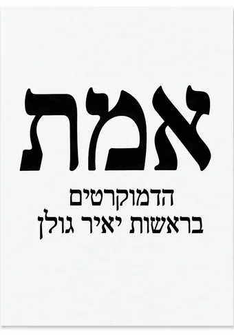

שלחנו קוד בן 6 ספרות ל־
כדי למצוא את הקלפיות הקרובות אליכם
בחרו קלפי, או שנשבץ אתכם היכן שנדרש
לא נמצאו קלפיות קרובות — נשבץ אתכם היכן שנדרש.
לאשכול הזה עדיין אין מנהל/ת
תרצו להוביל אותו? זה אומר לתאם בין המתנדבים ולהיות אנשי הקשר של האזור.
תודה רבה!
הדמוקרטים בראשות יאיר גולן 2026 © כל הזכויות שמורות
האתר עוצב ופותח על ידי עומרי פיינשטיין